多人联机方法
*此篇教程对玩家的前置条件有所要求，建议看完以下教程后再来阅读该篇教程：MOD模组安装
*因图片加载问题，本篇的步骤图文可在每一部分的末尾展开查看
零、序
mc的多人联机方式主要有两种：服务器 和 局域网联机。本篇主要会围绕 基于局域网联机和其他内网映射软件（SakuraFrp、Radmin LAN） 来介绍联机方式。
SakuraFrp 与 Radmin LAN 各有长处。
- SakuraFrp在 网络高峰期 时，联机网络质量可能会波动，且因为相关政策，房主注册用户时需要1块钱的实名认证费用，并且未满18岁无法使用该软件，但 只需要房主自己部署和配置，其他人就可以直接通过 SakuraFrp 提供的 IP地址 进行联机，无需进行额外的步骤。
- Radmin LAN 的联机是基于P2P，因此房主和其他玩家都需要安装 Radmin LAN，其网络稳定性取决于玩家之间的网络质量。
两种内网穿透软件本篇都会介绍，但选择哪一种方法取决于你的场景需要。
BakaXL启动器 也有更为简单直接的 用户联机功能（也是基于P2P），这里就不展开讲解。
本篇将会先介绍基本的 进入多人世界 的步骤，之后再是介绍通过 SakuraFrp 和 Radmin LAN。
通过 服务器 的多人联机方法 可以在这里找到：服务器的简单部署。
一、联机的基本原理和操作顺序
想要让玩家与玩家一起游玩，首先就是要建立对应的网络通信，而进行网络通信，就需要对方的 IP地址。这就好比是你要去朋友家玩，你就需要知道他家的地址，这里他家的地址就相当于是IP地址。
而联机的基本流程就是如下：环境配置（可能）→ 获取IP地址 → 建立网络通信。
因此，获取IP地址 是最为核心的步骤，只要获得 IP地址，就可以进行联机游玩了。
要连接到多人世界，首先要获得你要联机的主机的 IP地址。
具体进入多人世界的方法可以看这里：进入服务器/局域网世界
原版的局域网联机是默认开启正版验证的，关于关闭正版验证可以在下文找到：四、关闭正版验证(可能需要)
二、通过SakuraFrp进行联机
进入SakuraFrp官网：https://www.natfrp.com/，点击 注册账号。
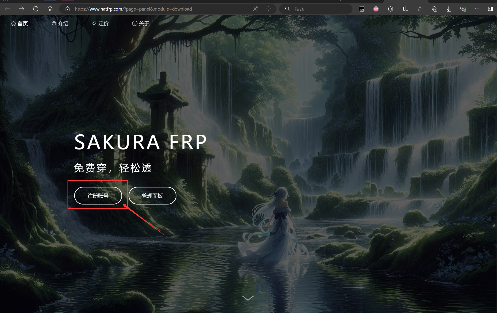然后填写注册账号相关的信息。
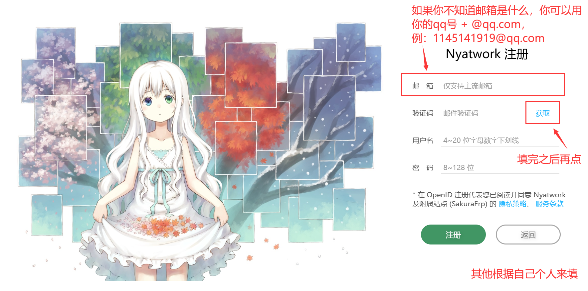注册完毕并登入成功后就会进入到 OpenID用户界面。
点击进入 Sakura Frp。在顶部菜单选择 服务 → 软件下载。
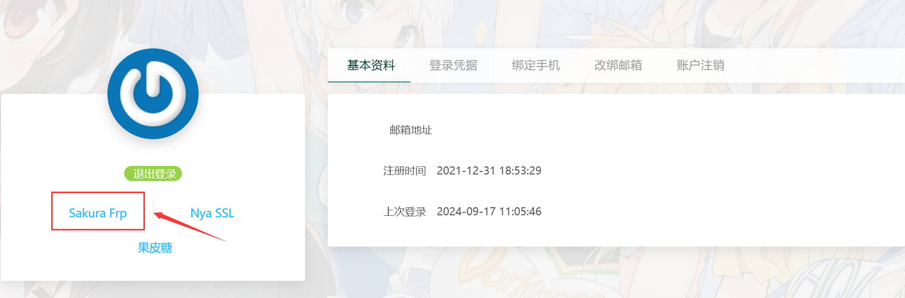然后根据自己的 操作系统 来选择对应的安装包。
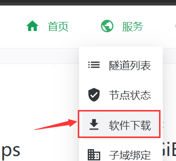下载完毕后直接跟着安装程序的 默认设置 安装。
安装完毕后打开 SakuraFrp，找到 设置 → 账户 → 访问密钥。
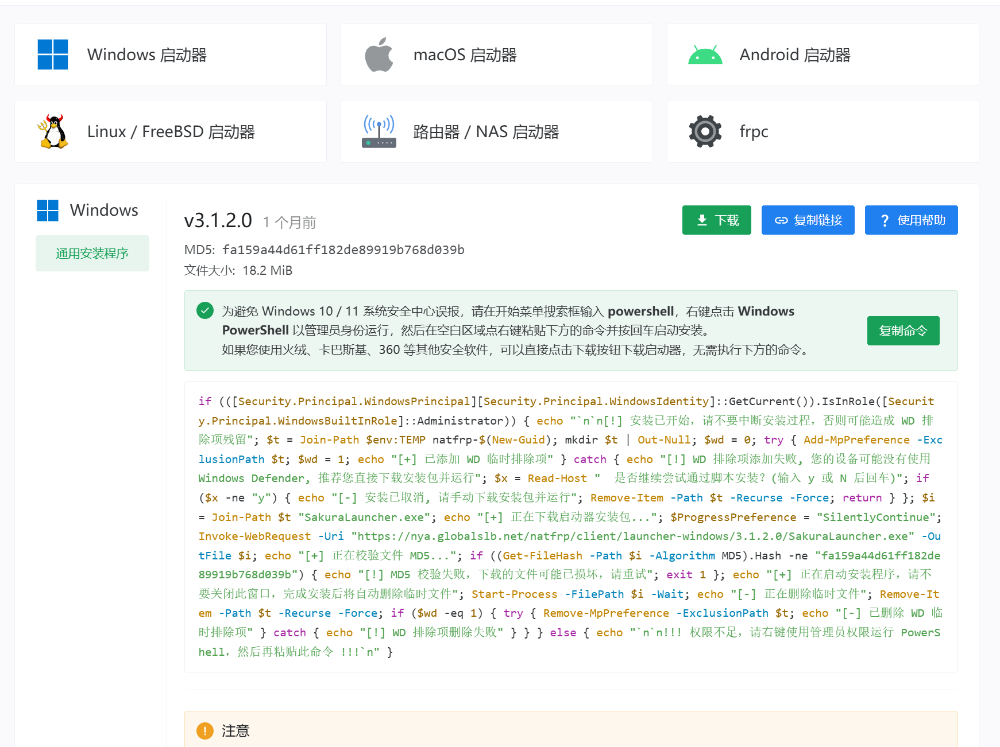这里的访问密钥我们需要在官网的个人主页中的 用户 → 用户信息 → 账户信息 里找到 访问密钥，点击复制 即可获取访问密钥。
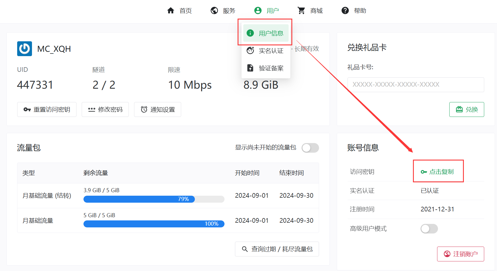回到SakuraFrp软件里，将刚刚获取到的访问密钥 粘贴过来，点击 登录。
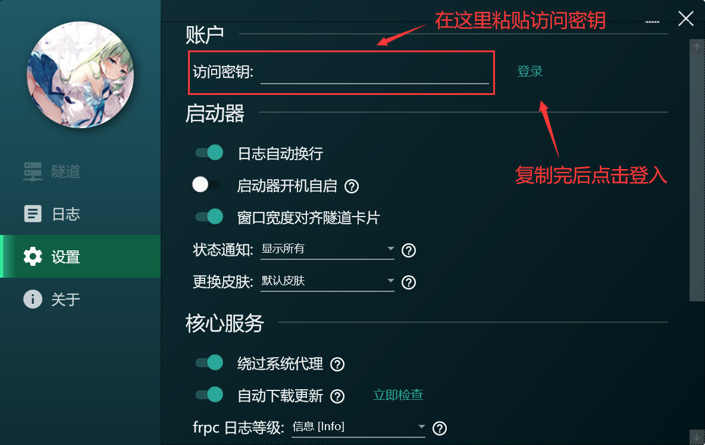目前还不能创建 内网穿透隧道，还需要进行实名认证。在官网的个人主页中找到 用户 → 实名认证 里按照官网给的步骤进行实名认证。（此过程需要支付1元的认证费用）

实名认证完后就能够创建 内网穿透隧道 了。
接着打开mc进入世界里，按esc打开游戏菜单，点击 对局域网开放 ，在这里：
- 如果你游玩的mc版本是 1.21 以下 的版本，在你 创建局域网世界 之后，游戏会随机分配端口号；
- 如果你游玩的mc版本是 1.21及 以上 的版本，可以在这个界面里自定义端口号的。
创建局域网世界 之后，开放的端口号会在 游戏聊天框 里用 绿色 标准出来，记住这个端口号。
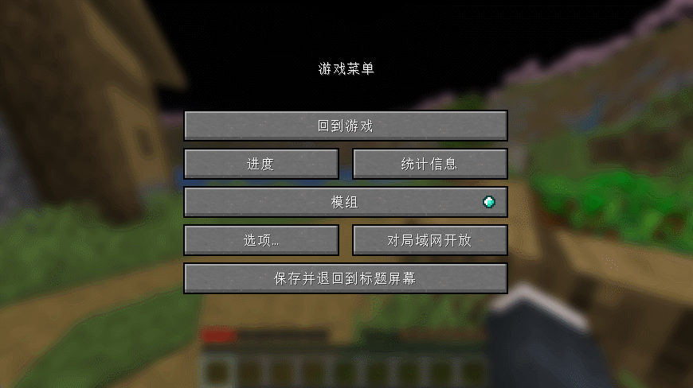接下来我们就回到SakuraFrp软件里创建隧道。点击左上角的 “+”。
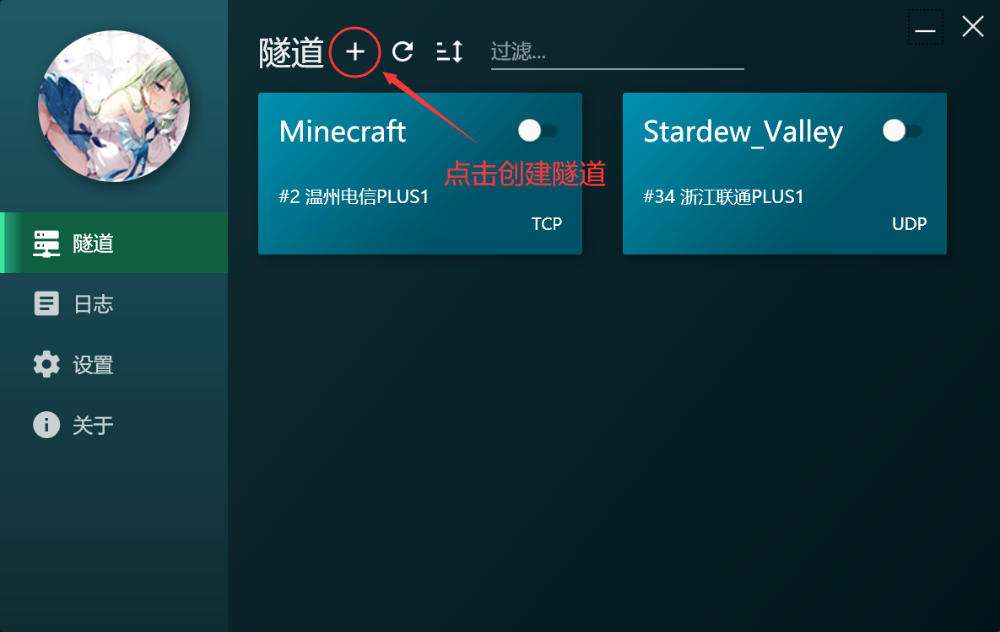根据自身的情况，选择你要映射到的服务主机，然后将隧道类型设置为 TCP隧道，本地端口 一栏就填上刚刚获得的端口号，隧道名称随便填，确定设置好后点击右下角的 创建。
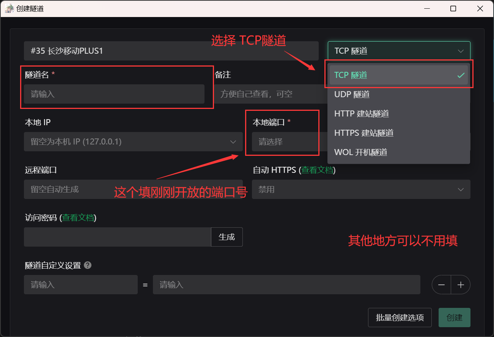在隧道列表里可以看到刚刚创建的隧道的话，就说明创建成功了。
开启隧道后，在日志里找到：
TCP 隧道启动成功
使用 >> [你的IP地址] << 连接你的隧道
或使用 IP 地址连接: >> [也是你的IP地址] <<（不建议使用这个）
这就是内网映射出去的IP地址，也就是其他玩家进入该世界所要的 IP地址了，复制下来发给你的朋友吧。
三、通过Radmin LAN进行联机
进入Radmin官网下载软件并安装：Radmin LAN – 下载免费 LAN 软件 (radmin-lan.cn)
安装完成之后打开 Radmin LAN，点击 红色开关，等待一段时间，等开关变蓝且显示 在线 后，就成功连接到了 Radmin LAN。
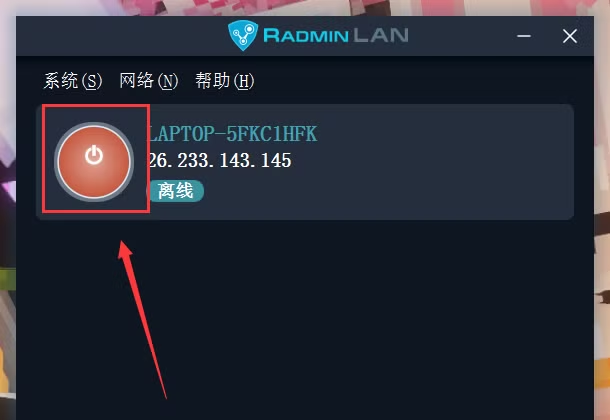1. 房主
如果你是房主，就选择 创建网络，填写并记住 网络名称 和 密码 之后，点击 创建。然后把 网络名称 和 密码 分享给你要邀请的玩家。
接着打开mc进入世界里，按esc打开游戏菜单，点击 对局域网开放 ，在这里：
- 如果你游玩的mc版本是 1.21 以下 的版本，在你 创建局域网世界 之后，游戏会随机分配端口号；
- 如果你游玩的mc版本是 1.21及 以上 的版本，可以在这个界面里自定义端口号的。
创建局域网世界 之后，开放的端口号会在 游戏聊天框 里用 绿色 标准出来，记住这个端口号。
然后你接下来分享给其他玩家的 IP地址就是 开关按钮 旁边的那一串IP + 开放的端口号。
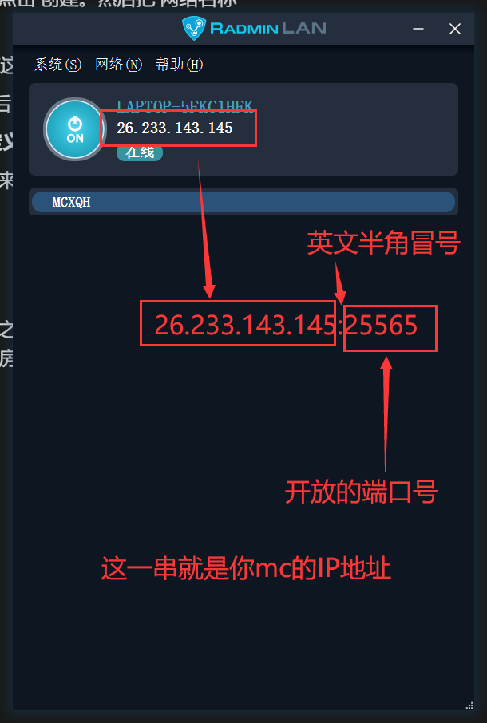2. 其他玩家
如果你是玩家，就选择 加入网络，填写好房主分享的 网络名称 和 密码 之后，点击 加入。如果下方有出现 同样网络名称的一栏，那么就说明成功进入到网络了。之后就用房主分享的 IP地址 连接到服务器吧。
四、关闭正版验证(可能需要)
如果非正版的玩家想要进入到局域网世界，就要在开启局域网之前，把正版验证关闭。
首先 联机双方 都要安装一个 自定义局域网联机（Lan Server Properties）的模组，且运行的模组加载器都要相同。关于如何安装模组可以在这里找到：MOD模组安装。
这样就可以在 对局域网开放 里，找到 在线模式 的选项，把正版验证给关闭了。
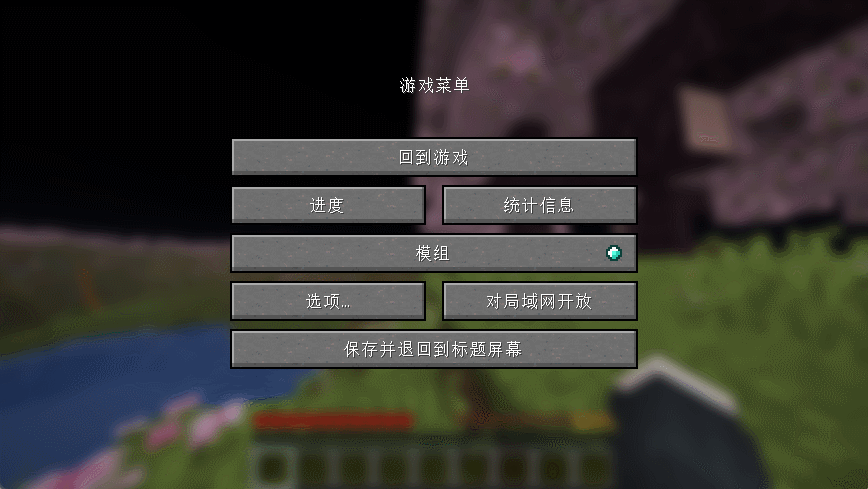
关于如何转移或修改玩家数据，可以看这个视频：(教程向/Java)将中国版的存档及玩家数据转到国际版上_哔哩哔哩bilibili_教程 夹带私货（
仍有不理解的地方或问题？在文章的相应位置评论留言↑↑↑
或在Github上反馈文章问题。